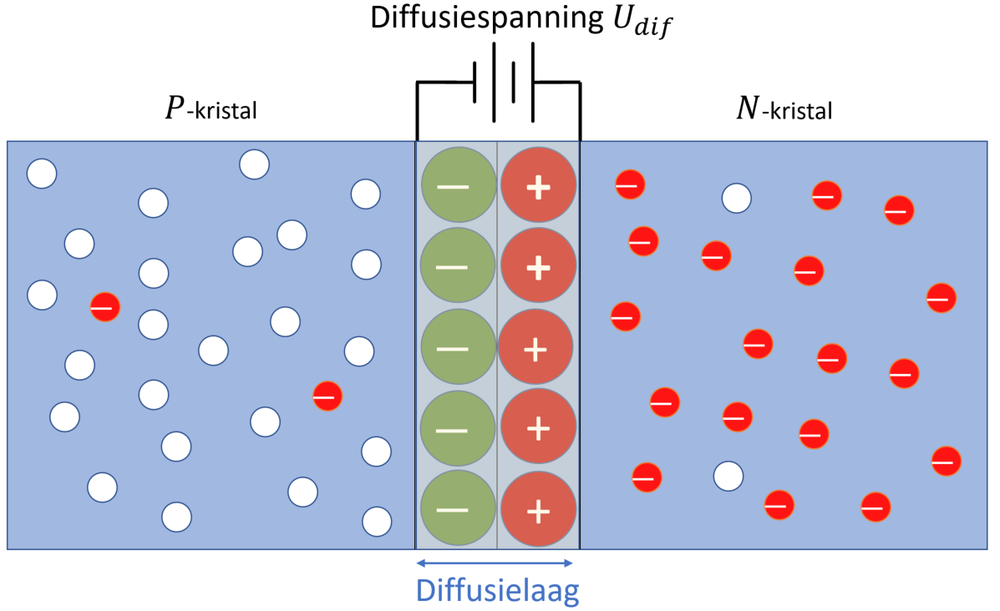

De PN-junctie
Intrinsiek silicium of germanium is geen goede geleider. Het moet bewerkt worden om het aantal vrije elektronen en gaten te laten stijgen om zo voldoende geleidbaarheid te creëren. Als een vijfwaardige onzuiverheid wordt toegevoegd aan silicium dan ontstaat er een zogenaamd N-materiaal. Wordt een driewaardige onzuiverheid toegevoegd aan silicium ontstaat er een zogenaamd P-materiaal. Gedurende de fabricage vormen deze materialen een grens dat PN-junctie wordt genoemd. Het zijn juist de eigenschappen van zo’n PN-junctie die toelaten om onder andere dioden, transistoren en JFET’s te laten werken.
Wat is belangrijk?
Je maakt een vergelijk tussen P-type en N-type halfgeleiderkristal.
Je geeft een voorbeeld van donor- en acceptormateriaal.
Je omschrijft hoe een PN-junctie tot stand komt.
Doping
Het verhogen van de geleidbaarheid door toevoeging van onzuiverheden in een intrinsiek kristal wordt doping genoemd. Er zijn twee mogelijkheden om een intrinsiek kristal te doperen, namelijk door gebruik te maken van vijfwaardige atomen of door gebruik te maken van driewaardige atomen.
Toevoegen van vijfwaardige onzuiverheden
Antimoon (Stibium Sb) is een vijfwaardig atoom. Dit wil zeggen dat het vijf elektronen in zijn valentieband heeft. Door antimoon toe te voegen aan een intrinsiek siliciumkristal zal antimoon zich covalent binden met vier siliciumatomen om op die manier een kristalstructuur te vormen. Door de covalente bindingen met vier siliciumatomen heeft antimoon negen elektronen in zijn valentieband. Vermits ieder atoom streeft naar een stabiele toestand (edelgasstructuur) die erin bestaat in acht elektronen (of helemaal geen) in zijn valentieband te hebben, zal antimoon zijn vijfde elektron afstoten. De vier overige elektronen hebben immers covalente bindingen aangegaan met valentie-elektronen van silicium waardoor rond antimoon acht elektronen bewegen. Het vijfde afgestoten elektron wordt een vrij elektron in de geleidingsband.
Vermits het vijfwaardig atoom een vrij elektron afgeeft in het kristal wordt ook de benaming donor gebruikt om dit atoom aan te duiden. Antimoon is bijgevolg een donor van een vrij elektron in het kristal. Hoe meer donorer in het kristal worden gedfopeerd, hoe meer extra vrije elektronen in het kristal worden gecreëerd. Deze extra vrije elektronen zijn niet ontstaan door thermische energie die covalente bindingen breekt. Zodoende zijn er ook geen extra gaten ontstaan en zijn er in siliciumkristallen die met vijfwaardige atomen gedopeerd zijn meer elektronen aanwezig dan gaten. In zulk kristal worden de elektronen de meerderheidsladingsdragers genoemd en de gaten de minderheidsladingsdragers. Aan gezien er meer “bewegelijke” negatieve ladingen in het kristal aanwezig zijn dan positieve ladingen noemt men een met vijfwaardige atomen gedopeerd intrinsiek siliciumkristal een -kristal. De letter slaat op negatief en duidt er op dat de meerderheids-ladingsdragers in dit kristal negatieve ladingen of elektronen zijn. Merk op dat de totale lading in het kristal gelijk blijft aan nul. Dit komt omdat voor elk vrij elektron, dat ontstaat door het doperen van het silicumkristal, een positief ion vast in de kristalstructuur aanwezig is. Op die wijze is de totale hoeveelheid lading binnen het -kristal in evenwicht en gelijk aan nul.

Figuur 2-5 : doperen met vijfwaardige atomen leidt tot -kristal en doperen met driewaardige atomen leidt tot -krisal
Toevoegen van driewaardige onzuiverheden
Een driewaardig atoom heeft drie elektronen in de valentieband. Borium (B) is een voorbeeld van een driewaardig atoom. Wanneer borium gedopeerd wordt in intrinsiek silicium zal het covalente bindingen maken met omringende siliciumkristallen en op die wijze integreren in de kristalstructuur. Echter borium heeft één elektron te weinig om vier covalente bindingen te kunnen opbouwen. Hierdoor wordt kunstmatig een gat gecreëerd en zal borium proberen een vrij elektron te “vangen” om aldus tot de vorming van de vierde covalente binding te kunnen overgaan. De driewaardige atomen die gedopeerd worden in een intrinsiek halfgeleiderkristal worden ook acceptoren genoemd. Een acceptoratoom is een atoom dat een vrij elektron probeert op te nemen in zijn valentieband.
Door een groot aantal driewaardige atomen te doperen in het kristal wordt een bepaalde extra hoeveelheid gaten in het kristal gecreëerd. Hierdoor zijn de gaten in de meerderheid in dit kristal en wordt gesproken van een positief kristal of -kristal. Ze zijn in de meerderheid om dat ze niet ontstaan zijn door een verbreking van een covalente binding ten gevolge van thermische energie. Hierdoor is bij de creatie van een gat door het acceptoratoom geen vrij elektron ontstaan en zijn er dus meer gaten in dit kristal dan vrije elektronen. Ook in een -kristal is de totale lading gelijk aan nul vermits voor ieder gat dat gemaakt is door het invoegen van een acceptor, evenveel elektronen rond de kern aanwezig zijn als protonen in de kern. Vermits door de aanwezigheid van thermische energie covalente bindingen worden gebroken, zijn er ook vrije elektronen aanwezig in het -kristal. Zodoende heeft men binnen dit -kristal vrije elektronen als minderheidsladingsdragers en gaten als meerderheidsladingingsdragers.
Vorming van een PN-junctie
Door een intrinsiek kristal voor de ene helft met -materiaal te doperen en voor de andere helft met -materiaal, ontstaat tussen deze twee gebieden een -junctie. Binnen het -gebied zijn de meerderheidsladingsdragers vrije elektronen die zich voornamelijk bevinden in de geleidingsband. Er bevinden zich in dit gebied ook enkele gaten die door thermische energie zijn gecreëerd. Het -gebied bestaat voornamelijk uit gaten als meerderheidsladingsdragers. De gaten bevinden zich in de valentieband waar ook enkele vrije elektronen aanwezig zijn door het verbreken van covalente bindingen ten gevolge van thermische energie. Op de grens tussen het -kristal met het -kristal ontstaat een -junctie. Deze -junctie vormt de basis van alle halfgeleidercomponenten. Is er maar één -junctie aanwezig in het kristal dan spreekt men van een diode.
Tijdens de vorming van de -junctie zullen sommige vrije elektronen het -gebied instromen. Wanneer zo’n elektron het -gebied instroomt is het zeer waarschijnlijk dat het recombineert met een gat dat gecreëerd is door een driewaardig atoom. Als deze recombinatie gebeurt ontstaat er een negatief ion in het -kristal, meer bepaald in de onmiddellijke omgeving van de grens tussen het - en -kristal. Het vrij elektron dat deze grens overstak laat in het -gebied een positief vijfwaardig ion achter. Naarmate er meer en meer vrije elektronen vanuit het -gebied de grens oversteken naar het -gebied, zullen er in het -gebied meer negatieve ionen ontstaan en in het -gebied meer positieve ionen. Op die wijze ontstaat er een elektrisch veld tussen de negatieve ionen in het -gebied en de positieve ionen in het -gebied. Vermits het negatief gedeelte van deze veldsterkte in het -gebied ligt, wordt het voor de vrije elektronen alsmaar moeilijke om dit -gebied binnen te dringen. Waarom? Door het feit dat gelijknamige ladingen elkaar afstoten zal op een gegeven moment de (negatieve) veldsterkte over het gans grensgebied tussen - en -kristal zodanig groot geworden zijn dat elk vrij elektron dat deze grens wil oversteken wordt teruggeduwd naar het -kristal. Wanneer deze veldsterkte bereikt wordt, is het spanningsverschil tussen de positieve- en negatieve ionen opgelopen tot een à V voor juncties op basis van silicium en à op basis van germanium. Dit spanningsverschil wordt de diffusiespanning genoemd. Zie hiervoor ook figuur 2-6.

Figuur 2-6 : vorming van een -junctie
Vermits germanium-juncties enkel in speciale situaties worden gebruikt, wordt algemeen aangenomen dat de diffusiespanning over een dioden gelijk is aan . De laag ionen die tussen het - en -gebied ontstaat wordt de diffusielaag of deplation (uitputtingsgebied) genoemd. In deze laag bevinden zich zeer weinig vrije ladingsdragers. De enkele die zich in de diffusielaag bevinden zijn ladingsdragers die door de aanwezigheid van thermische energie ontstaan zijn. Ideaal gezien is er, zonder dat er uitwendige energie wordt aangelegd, in dit gebied geen enkele vrije ladingsdrager aanwezig.
Test jezelf aangaande -junctie
Hoe wordt een -type halfgeleider gevormd?
Hoe wordt een -type halfgeleider gevormd?
Wat is een -junctie?
Wat is de waarde van de diffusiespanning voor silicium?